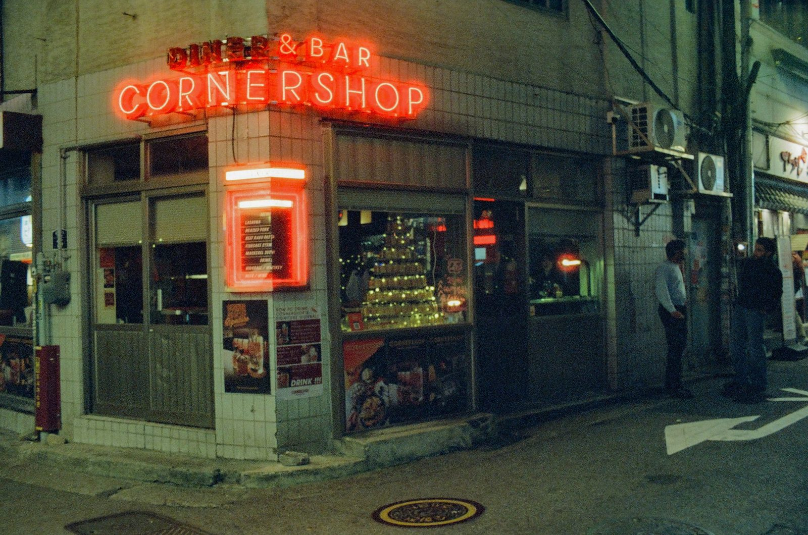
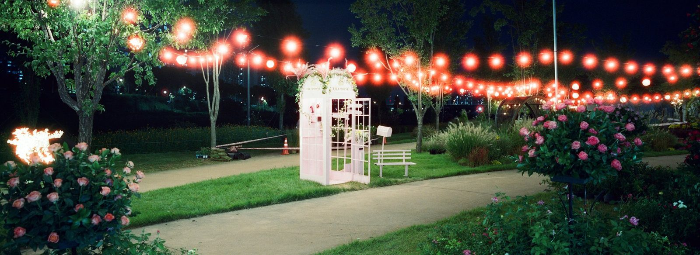
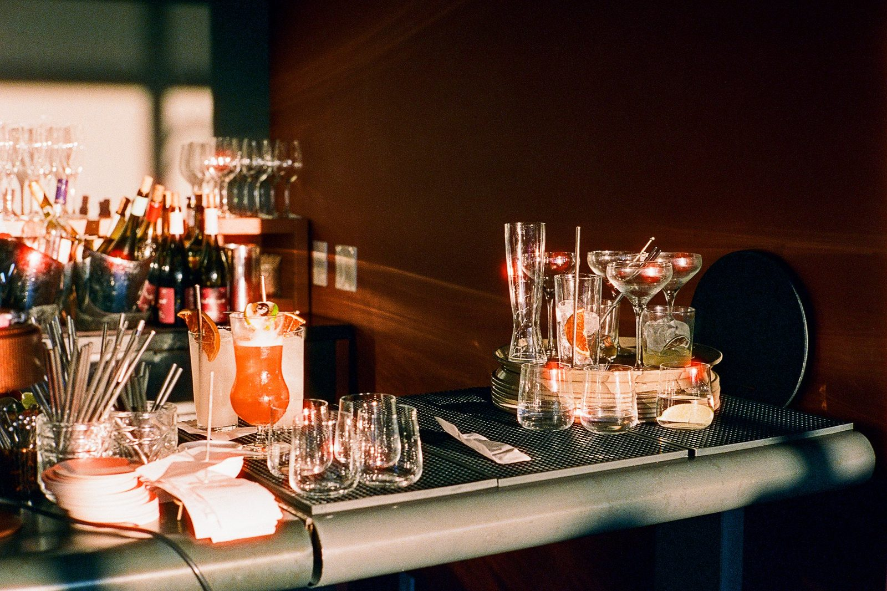
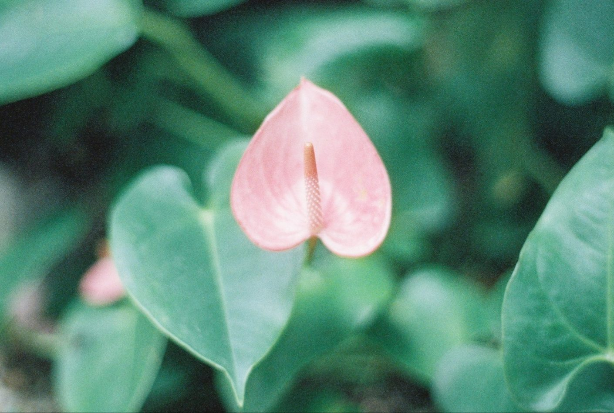
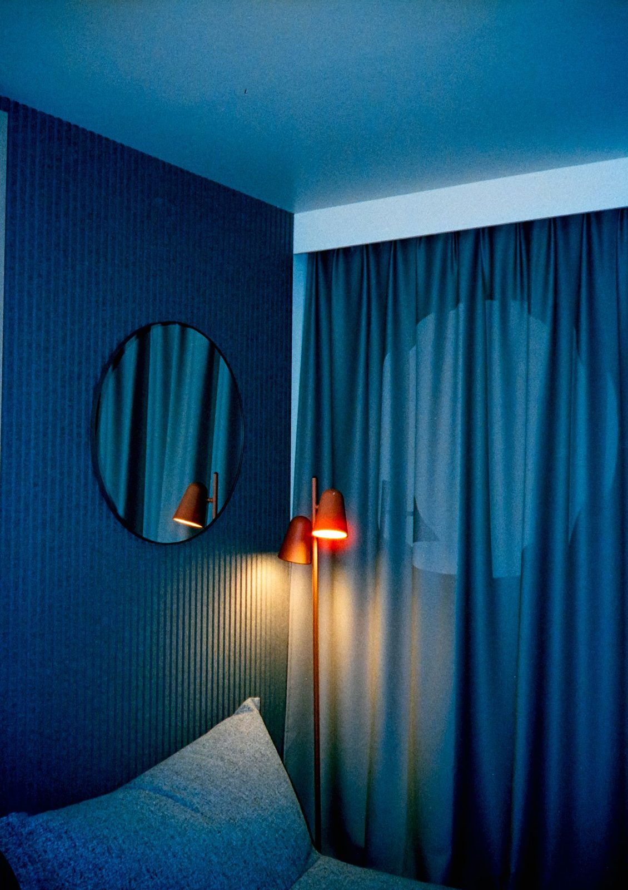

"우리는 현실을 단순히 '재현'하는 것에 지쳤는지도 모릅니다."
사진은 흔히 기록의 예술이라고 한다. 하지만 뷰파인더에 눈을 갖다 대는 순간, 우리는 무의식적으로 눈앞의 풍경을 편집하고 재구성한다. 어쩌면 우리는 있는 그대로의 현실을 복제하고 싶은 것이 아니라, 내가 바라본 세상의 분위기를 연출하고 싶은 것인지도 모른다.
CineStill 800T는 그런 우리의 욕망에 가장 충실하게 반응하는 도구다. 이 필름은 태생부터 남다르다. 할리우드의 거장들이 사랑하는 영화용 필름 Kodak Vision3 500T를 기반으로, 우리가 흔히 이용하는 현상소(C-41 프로세스)에서도 현상할 수 있도록 개조된 '변종'이기 때문이다. 그래서일까. 이 필름을 카메라에 로딩하는 행위는 단순한 촬영 준비가 아니라, "나의 오늘을 영화의 한 장면처럼 담겠다"는 선언처럼 느껴지곤 한다.
친절하지 않지만, 매우 관대한 필름
씨네스틸은 친절한 필름은 아니다. 역설적으로 매우 관대한 필름이기도 하다. 영화 촬영 현장은 단 한 번의 NG도 허용하고 싶지 않은 치열한 곳이다. 그곳에서 태어난 이 필름은 빛을 담아내는 그릇이 놀라울 정도로 크다.
가장 어두운 그림자 속에 숨은 디테일부터, 가장 밝게 터지는 하이라이트까지 묵묵히 품어낸다. 촬영자가 노출을 조금 실수하더라도, 이 필름은 그 실수마저 영화적인 무드로 덮어주는 든든한 신뢰감을 준다.
붉은 할레이션 — 결함이 아닌 시그니처

필름을 보호하는 렘젯(Remjet) 층을 과감히 벗겨낸 자리에는 할레이션(Halation)이라는 붉은 빛 번짐이 스며든다. 기술적으로는 결함일지 모르나, 네온사인 주변을 감싸는 그 몽환적인 붉은 띠는 우리의 밤을 마치 영화 〈블레이드 러너〉나 〈중경삼림〉의 한 장면처럼 바꿔놓는다.
ISO 800 — 밤을 거닐 자유

ISO 800이라는 높은 감도는 우리에게 밤을 거닐 자유를 선물한다. 무거운 삼각대를 세우고 숨을 참아가며 찍던 밤사진과는 다르다. 가로등 하나 켜진 골목길에서도, 빠르게 지나가는 차창 밖 풍경에서도 우리는 셔터를 누를 수 있다. 그 거침없는 속도감 덕분에, 우리는 정제된 풍경이 아니라 밤의 공기와 호흡이 생생하게 담긴 '살아있는 장면'을 포착하게 된다.
텅스텐의 양면성 — 밤의 온기, 낮의 냉기

색감 또한 흥미롭다. 텅스텐(Tungsten) 조명에 맞춰 설계된 이 필름은 밤의 온기, 그리고 낮의 냉기라는 양면성을 가진다. 밤의 인공 조명 아래서는 눈으로 보는 것보다 더 선명하고 깨끗한 빛을 잡아내지만, 반대로 대낮의 태양 아래서는 푸른 필터를 낀 듯 차갑고 낯선 도시의 얼굴을 그려낸다.

그레인 — 거친 입자가 만드는 서사

거친 입자감(Grain) 조차 서사가 된다. 매끄러운 디지털 이미지와 달리, 이 필름의 거친 입자는 사진에 영화적인 질감을 부여한다. 너무 깨끗해서 심심한 사진이 아니라, 거칠지만 밀도 높은 분위기가 프레임을 가득 채운다.
왜 우리는 이 필름을 선택할까
우리는 왜 이 까다롭고 값비싼 필름을 기꺼이 선택할까? 아마도 우리는 현실을 단순히 '재현'하는 것에 지쳤는지도 모른다. 대신 우리는 현실을 '해석'하고 싶어 한다. 셔터를 누르는 짧은 순간만이라도, 내 눈앞의 평범한 편의점이, 쓸쓸한 주유소가 영화 속 주인공이 머무는 공간이 되기를 바라는 마음. 그것이 바로 CineStill 800T가 우리에게 주는 가장 값비싼 가치일 것이다.
이번 호를 통해 여러분의 카메라에 담길 일상이, 기록을 넘어 하나의 장르 영화가 되기를 바란다.
9명의 작가가 담아낸 800T의 밤
알렉스 윤, 장호경, LIN ZI-CHUN, 김다운, 최지은, 노애경, 박순렬, 장형수, 김유민. Vol.02에는 아홉 작가가 CineStill 800T로 새긴 일상이 더 풍성하게 담겨 있습니다.